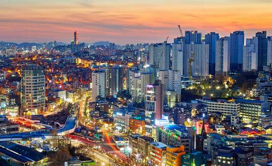
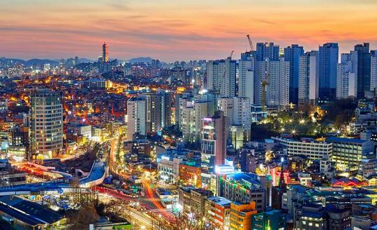

c1
c2
c3
c4
China,[i] officially the People's Republic of China (PRC),[j] is a country in East Asia. With a population exceeding 1.4 billion, it is the second-most populous country after India, representing 17.4% of the world population. China spans the equivalent of five time zones and borders fourteen countries by land[k] across an area of nearly 9.6 million square kilometers (3,700,000 sq mi), making it the third-largest country by land area.[l] The country is divided into 33 province-level divisions: 22 provinces,[m] 5 autonomous regions, 4 municipalities, and 2 semi-autonomous special administrative regions. Beijing is the country's capital, while Shanghai is its most populous city by urban area and largest financial center.
Georgia[c] is a country in the Caucasus region on the coast of the Black Sea. It is located at the intersection of Eastern Europe and West Asia,[13][14][15] and is today generally regarded as part of Europe. It is bordered to the north and northeast by Russia, to the south by Turkey and Armenia, and to the southeast by Azerbaijan. Georgia covers an area of 69,700 square kilometres (26,900 sq mi).[16] It has a population of 3.9 million,[d][9] of which over a third live in the capital and largest city, Tbilisi. Ethnic Georgians, who are native to the region, constitute a majority of the country's population and are its titular nation.
Korea[a] is a peninsular region in East Asia consisting of the Korean Peninsula,[b] Jeju Island, and smaller islands. Since the end of World War II in 1945, it has been politically divided at or near the 38th parallel between North Korea (Democratic People's Republic of Korea; DPRK) and South Korea (Republic of Korea; ROK). Both countries proclaimed independence in 1948, and the two countries fought the Korean War from 1950 to 1953. The region is bordered by China to the north and Russia to the northeast, across the Amnok (Yalu) and Duman (Tumen) rivers, and is separated from Japan to the southeast by the Korea Strait.
Russia,[b] or the Russian Federation,[c] is a country spanning Eastern Europe and North Asia. It is the largest country in the world, and extends across eleven time zones, sharing land borders with fourteen countries.[d] With over 140 million people, Russia is the most populous country in Europe and the ninth-most populous in the world. It is a highly urbanised country, with sixteen of its urban areas having more than 1 million inhabitants. Moscow, the most populous metropolitan area in Europe, is the capital and largest city of Russia, while Saint Petersburg is its second-largest city and cultural centre.